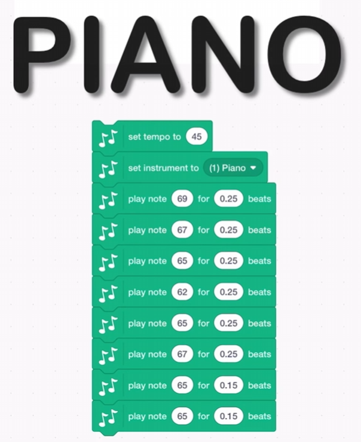
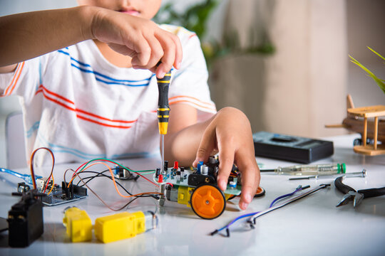
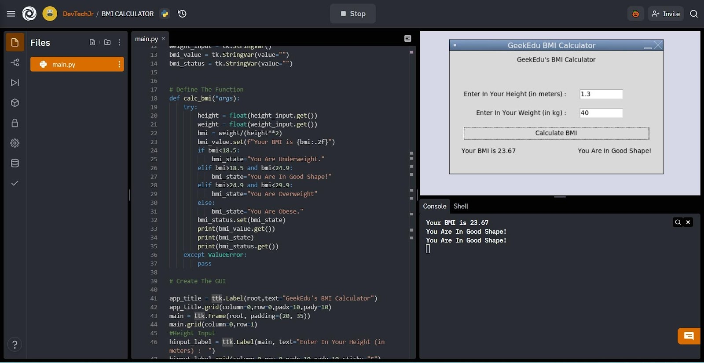
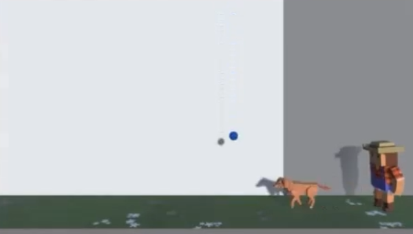

코딩도장 수련 과정 안내
코딩도장은 학생의 수준과 흥미에 맞는 다양한 과정을 통해
컴퓨팅 사고력(CT) 기반의 문제 해결 능력을 키우는 데 집중합니다.
단순 기술 암기가 아닌, 생각하는 힘을 기르는 여정에 함께하세요!
🚀 탐색과 동기부여: 코딩의 첫 스파크 입문/초급
코딩이 무엇인지, 왜 배우면 좋은지 즐거운 활동을 통해 알아보는 첫걸음입니다. 컴퓨터 없이도 가능한 언플러그드 활동과 간단한 논리 퍼즐로 코딩에 대한 호기심과 흥미를 유발합니다.
주요 학습 내용/목표
- 코딩의 기본 개념과 일상 속 연관성 발견하기
- 순서대로 생각하고 명령을 내리는 경험 (알고리즘 기초)
- 문제 상황을 간단하게 표현하고 해결 방법 찾아보기 (분해, 추상화 기초)
- 컴퓨터 과학 분야에 대한 긍정적인 태도 형성
핵심 수련 내용 (CT 연계)
- 명령어 게임: 친구에게 정확한 명령을 내려 목표 달성하기 (알고리즘, 명확성)
- 샌드위치 만들기 로봇: 로봇(친구)에게 샌드위치 만드는 절차 설명하기 (분해, 알고리즘)
- 그림 패턴 찾기: 반복되는 규칙을 찾아 다음 그림 예측하기 (패턴 인식)
CT 집중 훈련: 복잡한 것을 작은 단위로 나누는 '분해' 능력과, 명확한 절차를 만드는 '알고리즘' 사고의 기초를 다집니다. 무엇보다 코딩에 대한 긍정적인 동기를 부여하는 데 집중합니다.
🧩 블록 코딩 입문 (스크래치): 상상을 현실로 초급
스크래치와 같은 블록 코딩 도구를 사용하여 직접 게임, 애니메이션, 스토리를 만들며 프로그래밍의 핵심 원리를 직관적으로 배웁니다. 코딩의 즐거움을 직접 경험하는 과정입니다.
주요 학습 내용/목표
- 블록 코딩 인터페이스 익숙해지기
- 순차, 반복, 조건문, 이벤트, 변수 등 기본 프로그래밍 개념 이해 및 활용
- 스프라이트(캐릭터)와 배경을 활용한 인터랙티브 콘텐츠 제작
- 자신의 아이디어를 논리적인 순서로 구현하는 능력 배양
핵심 수련 내용 (CT 연계)
- 캐릭터 움직이기: X, Y 좌표 개념 이해 및 이동 명령 블록 조합 (알고리즘)
- 점수 시스템 만들기: 게임 상태(점수)를 변수로 표현하고 변화시키기 (추상화, 알고리즘)
- 장애물 피하기 게임: 충돌 감지(조건문) 및 반복 동작 구현 (패턴 인식, 알고리즘)
CT 집중 훈련: 명령어 블록을 조합하여 원하는 동작을 만드는 '알고리즘' 설계 능력을 중점적으로 기릅니다. 게임 상태와 같은 눈에 보이지 않는 정보를 다루며 '추상화' 개념을 자연스럽게 익힙니다.
프로젝트 예시: 스크래치로 나만의 리듬 게임 만들기

음악에 맞춰 노트가 내려오고, 타이밍에 맞게 키를 누르면 점수를 얻는 게임을 만들며 반복, 조건, 변수 개념을 복합적으로 활용합니다.
💡 피지컬 컴퓨팅 맛보기: 코드와 현실의 연결 초급/중급
아두이노, 마이크로비트 등의 교구를 활용하여 코딩으로 센서를 읽고 LED, 모터 등을 제어하며 소프트웨어가 현실 세계와 상호작용하는 원리를 체험합니다. 눈에 보이는 결과물을 통해 성취감을 높입니다.
주요 학습 내용/목표
- 마이크로컨트롤러 보드(아두이노 등) 사용법 익히기
- 입력(센서 값 읽기)과 출력(LED 켜기, 모터 돌리기)의 개념 이해
- 센서 데이터 값에 따라 다르게 동작하는 프로그램 만들기 (조건문 활용)
- 하드웨어와 소프트웨어의 연결성에 대한 이해 증진
핵심 수련 내용 (CT 연계)
- 스마트 전등 만들기: 빛 센서 값(입력)에 따라 LED 밝기(출력) 조절하기 (알고리즘, 추상화)
- 온도 알리미: 온도 센서 값이 특정 범위를 벗어나면 소리 또는 LED로 알림 (조건문, 알고리즘)
- 버튼으로 로봇 팔 제어: 버튼 입력(패턴)에 따라 모터 각도 제어 (패턴 인식, 알고리즘)
CT 집중 훈련: 현실 세계의 현상(빛, 온도)을 데이터로 '추상화'하고, 입력과 출력 사이의 명확한 규칙('알고리즘')을 설계하는 능력을 기릅니다. 문제 상황을 '분해'하여 필요한 센서와 동작을 결정하는 연습을 합니다.
프로젝트 예시: 자율주행 자동차 만들기

여러가지 센서의 작동방식을 배우며, 자율적으로 주행하는 자율주행 자동차를 단계별로 만드는 것을 배울 수 있어요!
🐍 텍스트 코딩 기초 다지기 (Python) 중급
블록 코딩 경험을 바탕으로, 쉽고 강력한 파이썬 언어를 통해 텍스트 기반 프로그래밍의 기초를 탄탄하게 다집니다. 문제 해결을 위한 논리적 사고력을 더욱 깊이 있게 훈련합니다.
주요 학습 내용/목표
- 파이썬 기본 문법(변수, 자료형, 연산자, 조건문, 반복문) 마스터
- 함수를 이용한 코드 구조화 및 재사용성 이해
- 리스트, 딕셔너리 등 기본 자료구조 활용법 익히기
- 간단한 알고리즘 문제 해결 및 콘솔 기반 프로그램 제작
핵심 수련 내용 (CT 연계)
- 숫자 맞추기 게임: 랜덤 숫자 생성, 사용자 입력 비교, 반복 및 조건문 활용 (알고리즘, 추상화)
- 간단한 계산기 만들기: 사용자 입력을 받아 연산 수행 함수 설계 (분해, 추상화, 알고리즘)
- 단어 목록 관리 프로그램: 리스트를 활용하여 데이터 저장, 검색, 수정 (자료구조, 알고리즘)
CT 집중 훈련: 텍스트 코드의 규칙(문법) 속에서 논리적 구조를 찾는 '패턴 인식' 능력을 기릅니다. 복잡한 기능을 함수 단위로 나누어 설계하는 '추상화'와 효율적인 문제 해결 절차를 고민하는 '알고리즘' 설계 능력을 심화합니다.
프로젝트 예시: BMI 계산기 만들기 프로젝트

19세기 아돌프 케틀레가 발명한 'BMI' 공식은 사람의 키(미터)와 몸무게(킬로그램)를 사용하여 공식을 적용합니다. 공식은 다음과 같습니다: 체중(kg)/키(m)의 제곱. 이렇게 하면 다음과 같은 차트를 통해 비교 및 분석할 수 있는 숫자가 반환됩니다!
🎮 게임 개발 엔진 입문 (Unity & C# 기초) 중급/고급
세계적으로 널리 사용되는 유니티 엔진과 C# 언어를 통해 전문적인 게임 개발의 기초를 배웁니다. 2D/3D 게임 제작의 기본 원리를 이해하고 간단한 게임을 직접 만들어 봅니다.
주요 학습 내용/목표
- 유니티 에디터 인터페이스 및 핵심 개념(Scene, GameObject, Component) 이해
- C# 프로그래밍 기초 (Unity 환경에서의 변수, 조건문, 반복문, 함수 활용)
- 캐릭터 이동, 충돌 처리, 간단한 UI 구현 등 게임 기본 기능 제작
- 에셋(이미지, 사운드) 활용 및 관리 방법 학습
핵심 수련 내용 (CT 연계)
- 플레이어 캐릭터 조종: 사용자 입력 처리 및 물리 기반 이동 구현 (알고리즘, 추상화)
- 장애물 생성 및 관리: Prefab(미리 만들어둔 오브젝트) 활용 및 생성/삭제 로직 구현 (패턴 인식, 추상화, 알고리즘)
- 아이템 획득 로직: 충돌 감지 및 특정 조건 만족 시 아이템 효과 발생 (조건문, 알고리즘)
CT 집중 훈련: 복잡한 게임 시스템을 오브젝트와 컴포넌트 단위로 나누어 생각하는 '분해' 및 '추상화' 능력을 집중적으로 기릅니다. 게임 내 여러 요소들의 상호작용 규칙을 설계하는 '알고리즘' 능력이 중요해집니다.
프로젝트 예시: 강아지 훈련 프로젝트

강아지를 컨트롤해서 아이템을 먹고 점수를 쌓아가는 게임 등 여러가지 스토리의 게임을 직접 C#언어로 코딩을 해봅니다.
🕹️ 본격 게임 개발 프로젝트 (Unity & C# 심화) 고급
기본적인 게임 개발 능력을 바탕으로, 기획부터 구현, 테스트까지 자신만의 게임 프로젝트를 완성해나가는 과정입니다. 더 복잡한 시스템을 설계하고 구현하며 실전 개발 역량을 키웁니다.
주요 학습 내용/목표
- 자신만의 게임 아이디어 기획 및 구체화
- 심화 C# 프로그래밍 (객체 지향 개념, 데이터 관리 등)
- 유니티 고급 기능 활용 (애니메이션, 파티클 시스템, UI 심화, 간단한 AI 등)
- 체계적인 프로젝트 관리 및 버전 관리(Git 등) 기초 경험
- 문제 해결 능력 및 디버깅 스킬 심화
핵심 수련 내용 (CT 연계)
- 게임 시스템 설계: 게임 루프, 데이터 구조, 씬 관리 등 전체 구조 설계 (추상화, 알고리즘)
- AI 캐릭터 구현: 적 캐릭터의 행동 패턴 설계 및 구현 (패턴 인식, 알고리즘)
- 코드 리팩토링: 기존 코드의 비효율적인 부분을 찾아 개선 (패턴 인식, 알고리즘 최적화)
- 버그 추적 및 수정: 논리적 추론을 통해 오류의 원인을 찾아 해결 (디버깅, 평가)
CT 집중 훈련: 배운 모든 CT 역량을 종합적으로 활용하여 복잡한 시스템을 창조하는 과정입니다. 효율성과 확장성을 고려한 '알고리즘' 설계, 프로젝트 전체 구조를 모델링하는 '추상화', 그리고 끊임없는 테스트와 개선을 통한 '평가' 능력이 중요합니다.
🏆 게임 완성 및 출시 준비 고급/프로젝트
개발한 게임의 완성도를 높이고, 실제 사용자에게 선보일 수 있도록 준비하는 과정입니다. 게임 밸런싱, 폴리싱(다듬기), 테스트, 빌드 및 간단한 배포 방법을 배웁니다.
주요 학습 내용/목표
- 게임 플레이 테스트 및 피드백 반영 방법 학습
- 게임 밸런싱 및 레벨 디자인 개선
- 사운드, 그래픽 이펙트 등 폴리싱 작업
- 다양한 플랫폼(PC, 모바일 등) 빌드 방법 이해
- (선택) 간단한 게임 소개 페이지 제작 또는 스토어 등록 절차 이해
핵심 수련 내용 (CT 연계)
- 사용자 피드백 분석: 여러 사용자의 의견 속에서 공통적인 문제점이나 개선점 찾기 (패턴 인식)
- 버그 리포트 분석 및 수정: 재현 경로를 파악하고 원인을 논리적으로 추론하여 해결 (알고리즘, 디버깅)
- 성능 최적화: 게임이 느려지는 구간을 찾아 원인을 분석하고 개선 방안 모색 (평가, 알고리즘)
CT 집중 훈련: 개발된 결과물을 객관적으로 분석하고 개선하는 '평가' 능력에 집중합니다. 사용자 데이터나 버그 리포트 속에서 의미있는 정보를 추출하는 '패턴 인식'과 문제 해결을 위한 논리적 '디버깅' 능력이 중요합니다.
코딩도장의 모든 과정은...
- 결과보다 과정을 중시합니다: 정답 맞추기보다 문제 해결 과정에서의 논리적 사고와 시도를 격려합니다.
- 실수와 실패를 환영합니다: 오류는 배움의 과정! 디버깅을 통해 더 깊이 이해하고 성장합니다.
- 재미와 흥미를 잃지 않습니다: 학생의 눈높이에 맞는 프로젝트와 활동으로 즐겁게 몰입하도록 돕습니다.
- 함께 성장합니다: 질문하고 토론하며 서로에게 배우는 협력적인 분위기를 만들어갑니다.